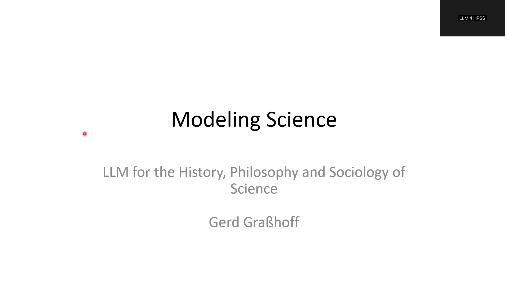
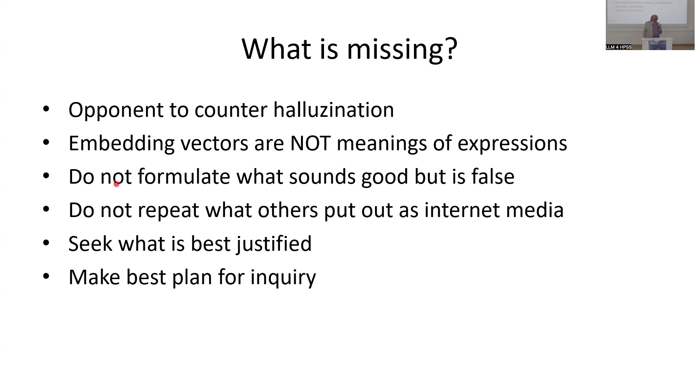
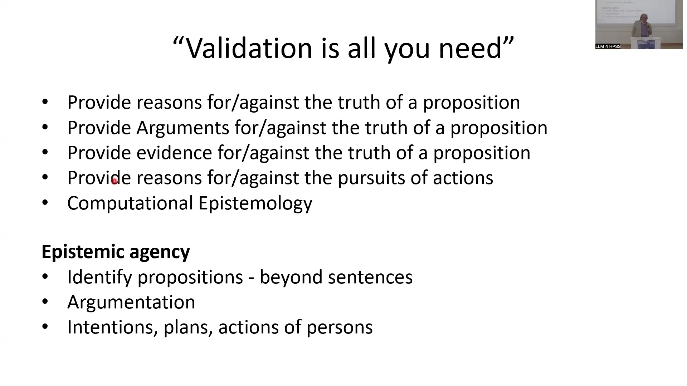
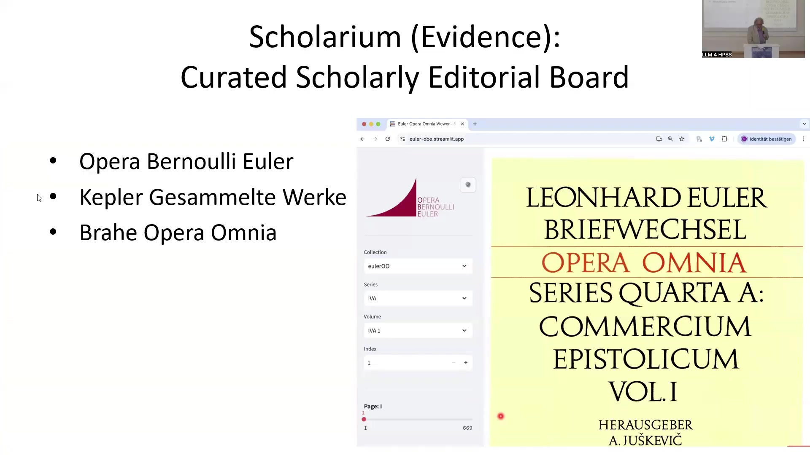

8 Modelling Science: LLM for the History, Philosophy and Sociology of Science
Overview
This chapter introduces a pioneering framework for historical and scientific inquiry. It meticulously harnesses advanced Large Language Models (LLMs) whilst systematically mitigating their inherent limitations, particularly concerning factual hallucination and validation. The authors propose a novel “computational epistemology” paradigm, which fundamentally prioritises robust validation mechanisms over the mere expansion of contextual understanding or the simulated “thinking” capabilities of contemporary LLMs.
A bespoke research infrastructure, aptly named Scholarium, forms the bedrock of this methodology. This sophisticated system seamlessly integrates meticulously curated scholarly sources, exemplified by the exhaustive Opera Omnia Euler, with a structured registry database. This registry systematically records historical activities and communications, thereby offering a validated alternative to conventional embedding-based approaches. The team implemented this intricate system within the Cursor environment, leveraging a suite of multimodal LLMs, including Gemini 2.5, Claude, and Llama, alongside a dedicated AI agent christened Bernoulli.
Furthermore, the project strategically employs Zenodo, a long-term FAIR (Findable, Accessible, Interoperable, Reusable) repository, for enduring data preservation and dissemination. Open Science Technology provides crucial technical support, operating a Model Context Protocol Application Programming Interface (MCP API) server. This server ensures global access to the curated data via standardised APIs for artificial intelligence models, fostering principles of open access, open data, and open collaboration. Ultimately, the system aims to deliver complete, rigorously validated answers to complex historical queries—a critical capability currently absent in existing LLM applications.
8.1 Evolution and Limitations of Large Language Models

Large Language Models have undergone a remarkably swift evolution, progressing through distinct conceptual phases. Initially, the paradigm centred on “Attention is all you need,” emphasising the core mechanism of Transformer architectures. Subsequently, the focus shifted towards “Context is all you need,” prompting developments such as Retrieval-Augmented Generation (RAG) to expand contextual understanding. The latest conceptualisation now postulates “Thinking is all you need,” suggesting a further layer of cognitive capability.
Despite this rapid advancement, current LLM iterations exhibit significant deficiencies, particularly concerning the rigorous demands of scholarly inquiry. Crucially, these models lack an inherent opponent mechanism to effectively counter hallucination, a pervasive challenge in generative AI. Furthermore, embedding vectors, whilst powerful for semantic similarity, fundamentally fail to capture the true meaning of expressions. These models frequently formulate statements that, whilst sounding plausible, prove factually incorrect.
Moreover, LLMs struggle to differentiate genuine knowledge from mere internet media or hearsay, often repeating unverified information. Consequently, LLMs currently cannot reliably seek the best-justified information or formulate coherent plans for complex scientific inquiry. While these are significant limitations, the framework presented in this chapter offers a promising approach to mitigate some of these fundamental challenges through robust validation.
8.2 The Imperative of Validation and Computational Epistemology

A critical need emerges for robust validation mechanisms within advanced computational systems. Such validation must furnish comprehensive reasons, compelling arguments, and verifiable evidence both for and against the truth of any given proposition. Moreover, it must extend to providing justifications for or against the pursuit of specific actions.
To address this profound gap, scholars propose a nascent discipline: computational epistemology. This new subject systematically develops the methods and methodologies essential for bridging the validation deficit inherent in current AI approaches. Computational epistemology aims to equip AI systems with the capacity for genuine epistemic agency, enabling them to reason about knowledge and justification.
Achieving genuine epistemic agency necessitates several key capabilities. Researchers must identify propositions that extend beyond simple sentences, discerning their underlying meaning and scope. Furthermore, the system must accurately identify arguments embedded within diverse texts, historical sources, and complex inquiries. Crucially, it must also discern the intentions, plans, and actions of historical figures, meticulously documented within their surviving records.
8.3 The Research Inquiry Environment

A specialised working environment facilitates rigorous historical inquiry. The interface presents an open historical source, such as a book title page, on its left pane. This context involves the construction of Sanssouci Castle under Frederick the Great and the contentious role of Leonhard Euler, one of the 18th century’s most eminent mathematicians, in what proved a significant construction failure. Historians continue to debate Euler’s precise responsibility for this setback.
The right pane features a text editor where users formulate specific inquiries. For instance, a user might pose the question: “Rekonstruiere welche Personen an der Wasserfontaine welche Arbeiten ausführten” (Reconstruct which persons performed which work on the water fountain). The system aims to provide a validated, qualifying answer, rigorously supported by proven evidence rather than mere hearsay. Consequently, the output lists individuals, such as Nahl, Benkert and Heymüller, and Giese, detailing their specific contributions, periods of work, earnings, and documented achievements or failures, with explicit references to associated files like “Manger1789_p81-91.xml”.
The Cursor environment, situated at the bottom right of the interface, enables the deployment of AI agents. Here, a dedicated agent, named Bernoulli, assists in navigating and querying these complex sources. A significant challenge, however, extends beyond merely reading individual PDF sources; it necessitates searching all available, relevant sources—a task for which conventional token-based indexing proves inadequate.
8.4 Scholarium: Curated Scholarly Sources

The system fundamentally relies upon a scholarly curated editorial board, which meticulously validates all integrated sources. A prime example of this rigorous approach is the Opera Omnia of Euler, a monumental collection spanning 86 volumes. Scholars dedicated over 120 years to its comprehensive editing, a process completed just two years prior. This exhaustive work encompasses all 866 of Euler’s publications and his complete correspondence.
Other significant scholarly works, including the Kepler Gesammelte Werke and Brahe Opera Omnia, further complement this foundational collection. Users access these resources via a dedicated Euler Opera Omnia Viewer, which provides intuitive navigation through collection, series, volume, and index dropdowns. This curated approach ensures the highest level of data integrity for historical research.
8.5 Scholarium: Registry as an Embedding Alternative

A pivotal innovation within this framework is the Scholarium, which serves as a sophisticated alternative to conventional embedding-based approaches. Functioning as a meticulously curated database of content items, the Scholarium maintains a highly detailed inventory of historically proven activities, with each entry rigorously validated against original sources.
This comprehensive registry systematically captures a diverse array of information. It meticulously documents personal actions, various communication acts—including letters, publications, and reports—and specific statements. Furthermore, it records implications, arguments, and inquiries, alongside the nuanced use of language, terminology, and concepts. The system also tracks the application of specific concepts and their relations, the deployment of models and methods, and the utilisation of tools and devices. Crucially, it catalogues the precise use of data, information, evidence, and sources. An integrated AI API, specifically leveraging the Model Context Protocol (MCP API), facilitates seamless interaction with this rich, structured data.
8.6 Technical Infrastructure and FAIR Principles
The system queries its meticulously compiled records using a suite of accessible multimodal models. Researchers have determined that the latest multimodal models, such as Gemini 2.5, prove optimal for the task requirements, adeptly combining information derived from both text and images. The Cursor environment integrates a range of LLM models, including Claude, Gemini, Llama, and LettreAI.
For enduring data preservation and publication, a long-term FAIR (Findable, Accessible, Interoperable, Reusable) repository is indispensable. Zenodo, hosted by CERN in Geneva, fulfils this critical role, ensuring the longevity and accessibility of the project’s data for many years.
Technical support for the underlying infrastructure is provided by Open Science Technology, a dedicated startup. This entity manages the operational aspects of the system, including the crucial Model Context Protocol (MCP API) server. This server facilitates worldwide access to the curated data via standardised APIs, enabling seamless interaction with artificial intelligence models. This comprehensive technical framework actively promotes principles of open collaboration, open source development, open access to resources, and open data sharing, thereby contributing to a more transparent and verifiable scholarly ecosystem. ```